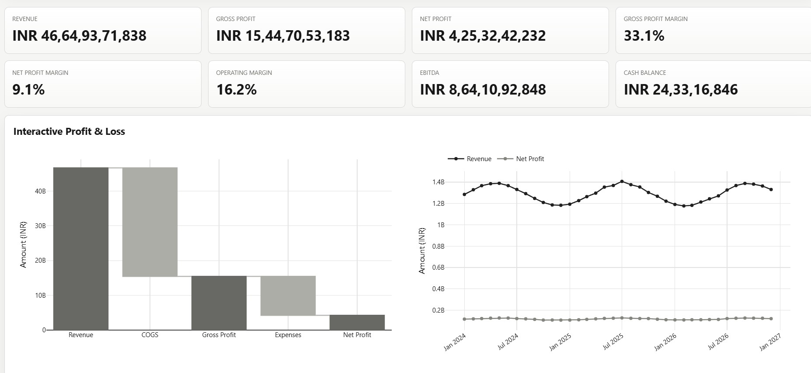
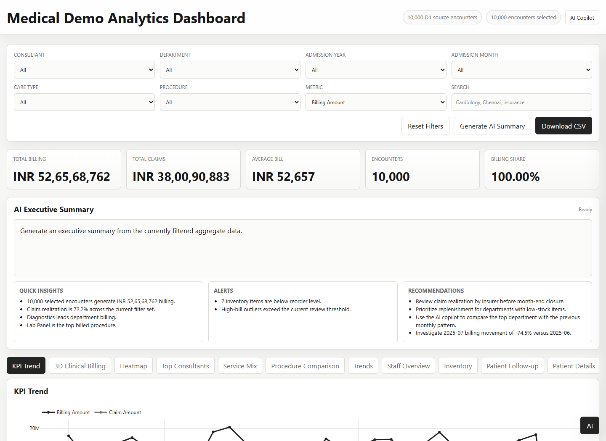
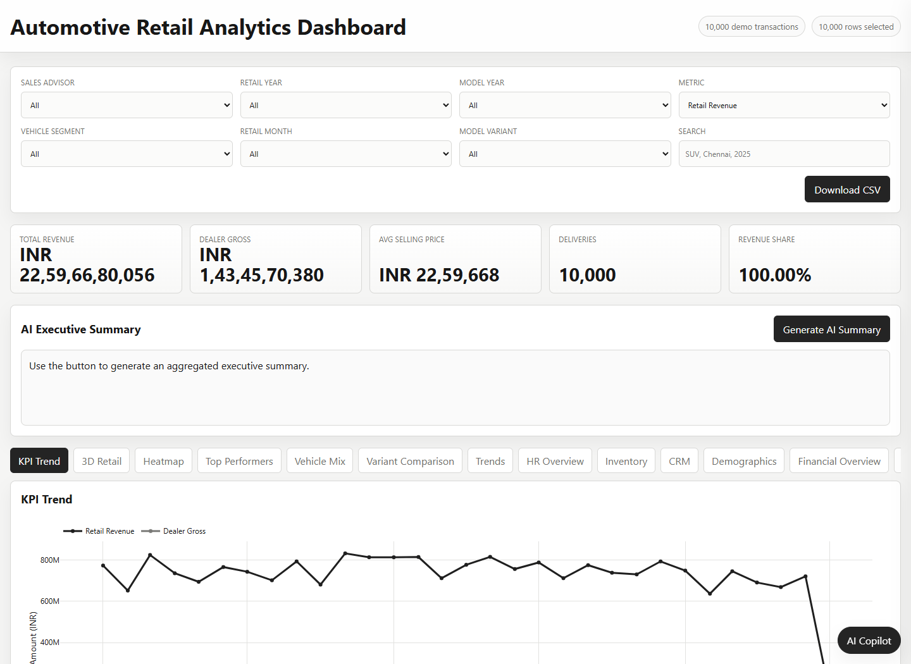
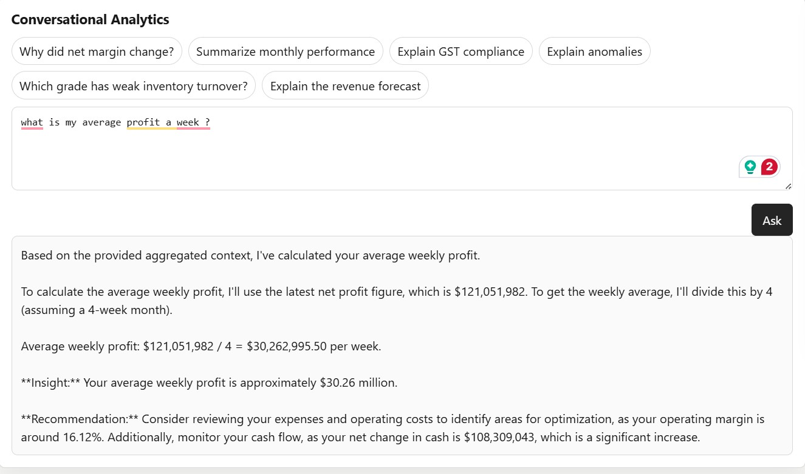
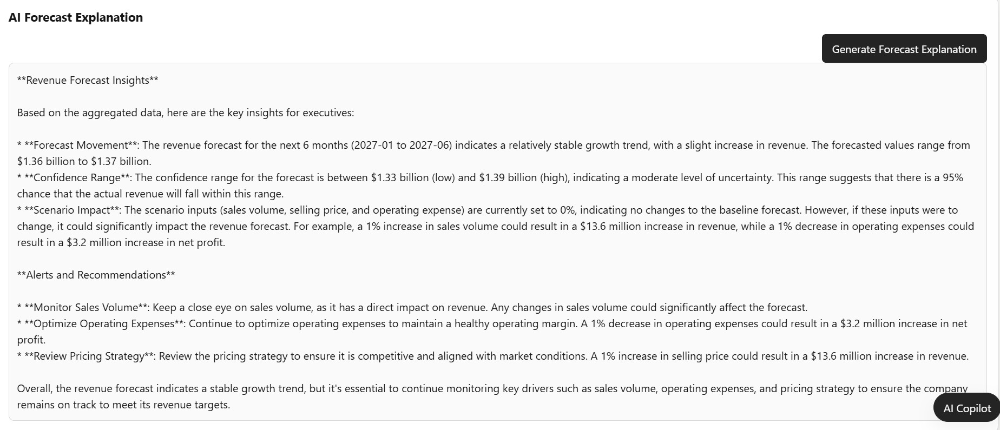
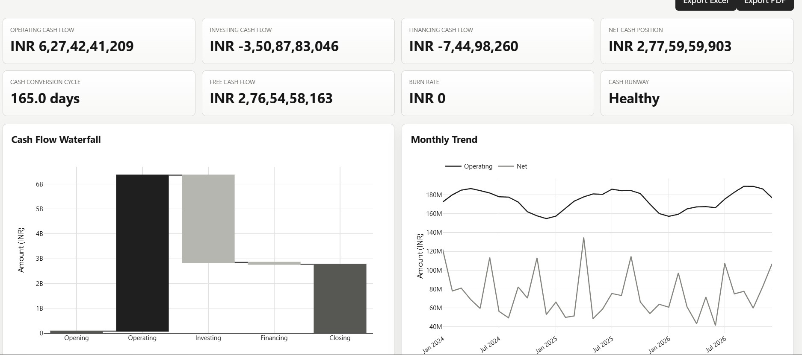
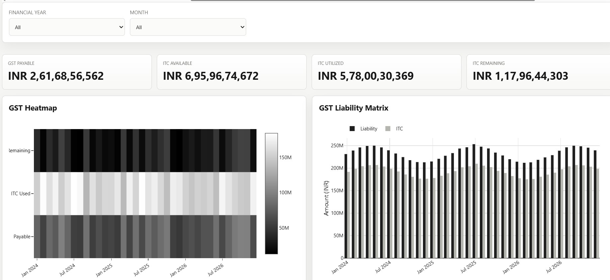
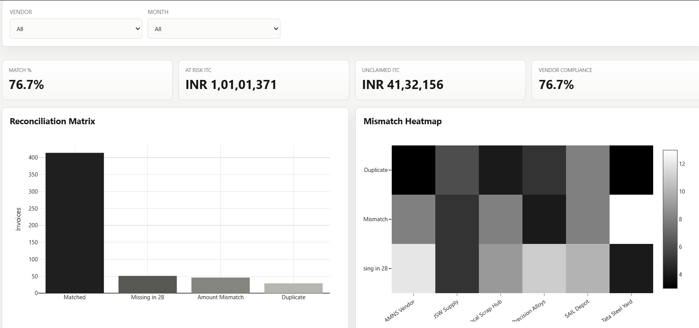

Business, Steel & Financial Intelligence
Revenue, margin, cash flow, GST, forecasting, inventory, audit readiness, Tally integration and AI Copilot for owners, CFOs, finance and operations teams.
Open business demoShowcase-ready platforms for manufacturing, financial intelligence, GST, healthcare, automotive retail, inventory, forecasting and AI Copilot workflows, built around each client's data, KPIs and business rules.

The website showcases Enterprise Business / Steel Analytics, Medical Analytics and Automotive Retail Analytics, proving the same BI architecture can be adapted across industries, processes and data models.
Revenue, margin, cash flow, GST, forecasting, inventory, audit readiness, Tally integration and AI Copilot for owners, CFOs, finance and operations teams.
Open business demo
Healthcare analytics covering billing, claims, encounters, consultants, service mix, patient follow-up, inventory, staff operations, demographics and AI Workspace.
Open medical demo
Retail revenue, dealer gross, average selling price, deliveries, advisor performance, vehicle mix, CRM, inventory, demographics and executive AI summaries.
Open automotive demoThese briefs summarize the business problem, implemented dashboard solution and technical architecture behind each demo.
The client needs a single operational and financial intelligence layer for a steel distribution and manufacturing business where sales, product grades, inventory, GST, cash flow, audit exceptions and profitability signals are fragmented across disconnected reports. Decision makers need to understand revenue movement, margin pressure, grade-wise performance, slow moving inventory, tax exposure and exception risk without manually reconciling spreadsheets or waiting for static month-end analysis.
I built an enterprise-style analytics dashboard that brings commercial, finance, inventory, GST and audit views into one interactive experience with dynamic slicers, KPI cards, financial overview, ratio analysis, cash flow, GST intelligence, reconciliation, audit readiness, forecasting and AI-assisted executive summaries. Business users can filter by period, product grade, customer, vendor, ledger group and risk context, then immediately see the impact on charts, tables, rankings and AI explanations based on aggregate dashboard data.
Cloudflare Pages for hosting, Cloudflare Pages Functions for server-side AI endpoints, JavaScript and Plotly for interactive visual analytics, Auth0 for dashboard authentication, Groq-hosted Llama 3.3 70B and GPT-OSS 120B models for AI analyst features, and structured synthetic CSV source data representing sales, financial ledgers, inventory, GST, reconciliation, cash flow, audit and profitability tables.
The client needs a healthcare analytics demo that can combine patient encounters, billing, claims, departments, procedures, consultants, inventory, staff activity and follow-up satisfaction into a secure executive dashboard. The core challenge is to provide useful operational and revenue-cycle insight while avoiding unsafe exposure of raw patient records, contact information, diagnosis, treatment plans or other sensitive details.
I built a medical operations dashboard that gives leaders a consolidated view of billing, claim realization, department performance, procedure mix, consultant contribution, patient detail summaries, inventory risk, staff utilization, demographics and AI workspace insights. The AI copilot is grounded on aggregate dashboard snapshots and a controlled synthetic patient lookup, so it can answer questions about revenue, departments, care types, claims and operational risk while refusing unavailable or sensitive patient-level information.
Cloudflare Pages for deployment, Cloudflare Pages Functions for secured API and AI service layers, JavaScript and Plotly for browser-based charts, Auth0 for protected access, Groq Llama 3.3 70B and GPT-OSS 120B for AI summaries and conversational analytics, and synthetic CSV/D1-style source tables covering encounters, patient details, departments, procedures, consultants, care types, inventory, staff, shifts, follow-ups and demographics.
The client needs a dealership and automotive retail intelligence layer that connects vehicle sales, model variants, sales advisors, dealer gross, average selling price, customer segments, CRM activity, inventory, finance, GST, audit risk and forecasting. The business problem is that dealership performance is difficult to diagnose when revenue, delivery volume, margin, advisor productivity and aged stock are reviewed in separate spreadsheets or static operational reports.
I built an automotive retail dashboard that translates the broader business intelligence framework into a dealership context with segment and model analytics, advisor ranking, financial overview, ratio analysis, cash flow, GST intelligence, audit readiness, forecasting, what-if planning and an AI analyst. The dashboard lets users slice by retail year, model year, vehicle segment, model variant, advisor, customer, vendor and risk context, then updates KPIs, charts, tables and AI explanations so commercial decisions are tied to current aggregate data.
Cloudflare Pages for hosting, Cloudflare Pages Functions for Groq-backed AI endpoints, JavaScript and Plotly for interactive dashboards, Auth0 for separate protected access, Groq Llama 3.3 70B and GPT-OSS 120B for the AI copilot and executive summaries, and synthetic CSV source tables for automotive retail sales, model variants, vehicle segments, sales advisors, customers, CRM interactions, inventory, employees and time logs.
P&L, EBITDA, margins, profitability, cost and cash performance.
Operating, investing and financing cash flow with trend monitoring.
GST payable, ITC available, ITC utilized, remaining ITC and compliance visibility.
Vendor matching, mismatch heatmaps, duplicate tracking and unclaimed ITC.
Production, capacity, grade mix, stock movement and operational intelligence.
Forecast movement, confidence ranges, scenario impact and recommendations.
The medical demo proves how the framework can be customised for healthcare operations, billing, claims, consultants, patients, inventory and AI-assisted decision support.
Total billing, total claims, average bill, encounters and billing share.
KPI trends, 3D clinical billing, heatmaps, consultant performance and department mix.
Care type mix, service mix, procedure comparison and quarterly trends.
Staff information, shift logs, performance distribution and logged hours.
Inventory visibility, low stock alerts and operational risk monitoring.
Interaction analytics, satisfaction trends and patient detail views.
The automotive retail demo demonstrates how the platform can be customised for dealerships, retail networks, sales leaders, branch managers and management teams.
Total revenue, dealer gross, average selling price, deliveries and revenue share.
Advisor-wise revenue, conversion, gross contribution and sales trend analysis.
Segment, model year, model variant and vehicle category comparison.
Vehicle stock visibility, ageing, availability, demand fit and replenishment insights.
Lead follow-up, customer segments, enquiry trends and sales funnel visibility.
Revenue, gross margin, costs, profitability and management-level financial KPIs.
Configured for business, manufacturing, finance, healthcare or automotive contexts, the Copilot can answer plain-English questions, summarize performance, highlight risks and explain forecasts.

Ask business questions and receive calculation-backed answers, insights and recommendations.

Generate management-ready summaries across revenue, margin, inventory, compliance and risk.

Explain forecast movement, confidence ranges, scenario impact and action recommendations.
Every implementation can be adapted to the client's business model, source systems, terminology, KPI definitions, approval workflows, compliance needs and executive reporting style.
AI components can be configured based on privacy, latency, cost and deployment needs.
Low-latency inference for conversational analytics, forecast explanations and summaries.
Open model support for domain-specific business, healthcare or automotive Q&A.
Configurable open-weight model option for secure and cost-aware deployments.



Use manufacturing, finance, healthcare or automotive examples to demonstrate how the same architecture adapts to each client's reports, KPIs and workflows.
Submit your details or connect Formspree, Getform, or EmailJS in
script.js.